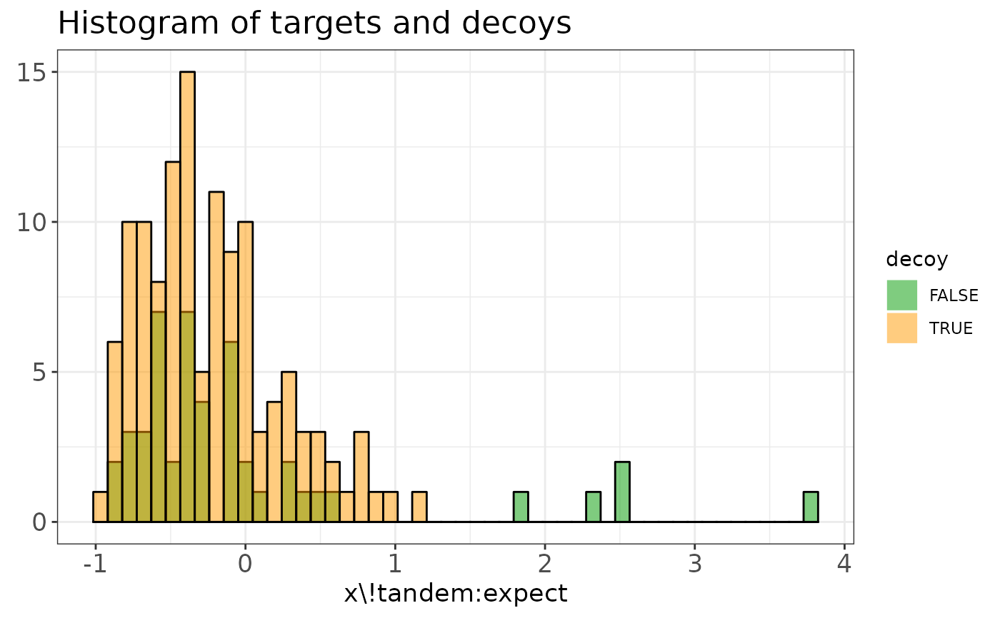

Create diagnostic plots to evaluate the TDA assumptions. A histogram and PP plot allow to check both necessary assumptions.
evalTargetDecoys(object, decoy = NULL, score = NULL, log10 = TRUE, nBins = 50)
evalTargetDecoysPPPlot(
object,
decoy = NULL,
score = NULL,
log10 = TRUE,
zoom = FALSE
)
evalTargetDecoysHist(
object,
decoy = NULL,
score = NULL,
log10 = TRUE,
nBins = 50,
zoom = FALSE
)character, name of the variable that indicates if the peptide
matches to a target or to a decoy. When this value is missing, a Shiny
gadget is launched to select it interactively.
numeric, indicating the score of the peptide match, obtained
by the search engine. When this value is missing, a Shiny gadget is
launched to select it interactively.
logical to indicate if the score should be
-log10-transformed. Default: TRUE. When this value is missing, a Shiny
gadget is launched to select it interactively.
numeric indicating the number of bins in the histogram.
When this value is missing, a Shiny gadget is launched to select it
interactively.
Logical value indicating whether a zoomed version of the plot
should be returned. Default: FALSE.
evalTargetDecoys returns an overview of the following four plots:
A PP plot showing the empirical cumulative distribution of the target distribution in function of that of the decoy distribution
A histogram showing the score distributions of the decoys and non-decoys
A zoomed PP plot
A zoomed histogram
evalTargetDecoysPPPlot generates the PP plot only (1.) or the zoomed
version (3.) if zoom = TRUE.
evalTargetDecoysHist generates the histogram only (2.) or the zoomed
version (4.) if zoom = TRUE.
Sometimes the variable names are not known up front. If this is the case, the
evalTargetDecoys*() functions can be called with only an input object. This
launches a Shiny gadget that allows selecting the variables interactively. A
histogram and PP-plot of the selected variables are created on the fly for
previewing, together with a snapshot of the selected data.
library(mzID)
## Use one of the example files in the mzID package
exampleFile <- system.file("extdata", "55merge_tandem.mzid", package = "mzID")
mzIDexample <- mzID(exampleFile)
#> reading 55merge_tandem.mzid... DONE!
# Plot the overview of the four plots
evalTargetDecoys(mzIDexample,
decoy = "isdecoy", score = "x\\!tandem:expect", log10 = TRUE
)
# Plot the PP plot only
evalTargetDecoysPPPlot(mzIDexample,
decoy = "isdecoy", score = "x\\!tandem:expect", log10 = TRUE
)
# Plot the zoomed PP plot only
evalTargetDecoysPPPlot(mzIDexample,
decoy = "isdecoy", score = "x\\!tandem:expect", log10 = TRUE,
zoom = TRUE
)
# Plot the histogram only
evalTargetDecoysHist(mzIDexample,
decoy = "isdecoy", score = "x\\!tandem:expect", log10 = TRUE
)

# Plot the zoomed histogram only
evalTargetDecoysHist(mzIDexample,
decoy = "isdecoy", score = "x\\!tandem:expect", log10 = TRUE,
zoom = TRUE
)
## mzRident objects can also be used
library(mzR)
#> Loading required package: Rcpp
if (requireNamespace("msdata", quietly = TRUE)) {
## Using example file from msdata
file <- system.file("mzid", "Tandem.mzid.gz", package = "msdata")
mzid <- openIDfile(file)
}
evalTargetDecoys(mzid,
decoy = "isDecoy", score = "X.Tandem.expect", log10 = TRUE
)